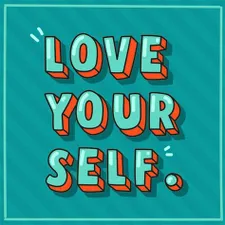

¿Quién soy yo?
¿Quién soy? La pregunta es infinitamente compleja: No soy sólo mi nombre, no soy sólo mi nacionalidad, no soy sólo mi profesión, no soy sólo mis gustos. Soy un conjunto de todo esto. Soy un gran compendio de muchas cosas que me definen.
La pregunta es:
¿Cuántas de estas cosas que me definen hoy pueden cambiar, sin modificar la persona que soy?
Mi nombre: Ángela Pulido.
Nacionalidad: Colombiana. Nací en Bogotá D.C.
Profesión: Diseñadora Industrial.
Me identifico con: Querer aprender constantemente, tener muchas ideas creativas. En general, me considero creativa y definitivamente no es una casualidad que me dedique a diseñar objetos.
Me encanta huirle a la mediocridad y también acariciar perritos.